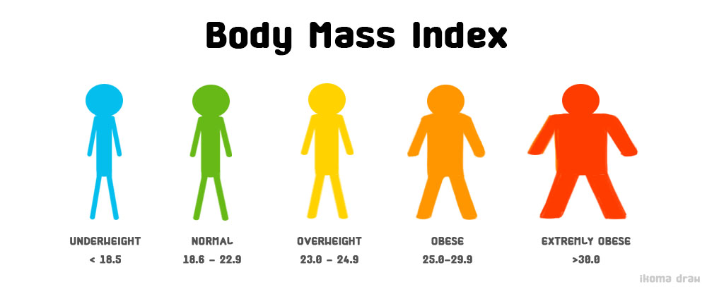

<div class="container-fluid">
  <div class="row">
    <div class="col-lg-11 col-md-11 col-sm-11 br-enter font-fam" style="margin-top: 5rem;">
      <div class="jumbotron">
        <!-- บทความ -->
        <h1 class="display-4 text-center">BMI คืออะไร ?!</h1>
        <p class="indent">
          Body Mass Index (BMI) หรือเรียกกันว่า ค่าดัชนีมวลร่างกาย คือ
          อัตราส่วนระหว่างน้ำหนักต่อส่วนสูงที่ใช้บ่งชี้ว่าอ้วนหรือผอมในผู้ใหญ่ตั้งแต่อายุ 20 ปีขึ้นไป
          สามารถทำได้โดยการชั่งน้ำหนักตัวเป็นกิโลกรัมและวัดส่วนสูงเป็นเซนติเมตร แล้วนำมาหาค่าดัชมีมวลกาย
          โดยมีสูตรการคำนวณ = น้ำหนักตัว[Kg] / (ส่วนสูง[cm] ยกกำลังสอง)
        </p>
        <p class="indent">
          โดยประโยชน์ของการทราบค่า BMI ของตนเองนั้นสืบเนื่องมาจาก
          ในปัจจุบันปัญหาสุขภาพและภาวะน้ำหนักเกินนั้นสามารถพบได้เกือบทุกที่จึงเป็นปัจจัยเสี่ยงหรือเป็นสาเหตุให้เกิดโรคต่างๆที่ส่งผลถึงสุขภาพจนอาจเป็นสาเหตุให้เสียชีวิตได้
          เช่น โรคความดันโลหิตสูง โรคเบาหวาน โรคหัวใจขาดเลือด และโรคนิ่วในถุงน้ำดี
          โดยพฤติกรรมเหล่านี้เกิดจากการไม่ออกกำลังกายหรือออกกำลังกายไม่ถูกวิธีและบริโภคอาหารที่ไม่มีประโยชน์ เช่น
          อาหารฟาสต์ฟู้ด อาหารจำพวกของทอด เป็นต้น
          รวมถึงผู้ที่มีน้ำหนักที่ผอมเกินไป ก็จะเสี่ยงต่อการติดเชื้อ ประสิทธิภาพในการทำงานของร่างกายลดลง
          ดังนั้นการรักษาระดับน้ำหนักให้อยู่ในเกณฑ์ปกตินั้นจึงจะส่งผลดีต่อร่างกายมากที่สุด
        </p>
        <div class="row">
          <div class="col-lg-5 text-center br-enter">
            <br>
            
          </div>
        </div>
        <br>
        <p class="">ซึ่งเกณฑม์าตรฐานของดัชนีมวลกายของชาวเอเชีย มีดังนี้</p>
        <p class="indent">- อ้วนมาก ( 30.0 ขึ้นไป )</p>
        <p class="indent">- อ้วน ( 25.0 - 29.9 )</p>  
        <p class="indent">- น้ำหนักเกิน ( 23.0 - 24.9 )</p>
        <p class="indent">- น้ำหนักปกติ เหมาะสม ( 18.6 - 22.9 )</p>  
        <p class="indent">- ผอมเกินไป ( น้อยกว่า 18.5 )</p>

        <!-- end -->

        <hr>
        <p class="text-center">Copyright © 2019 Rajamangala University of Technology Tawan-Ok : Chakrabongse Bhuvanarth Campus - Information
          Technology </p>

      </div>
    </div>
  </div>
</div>